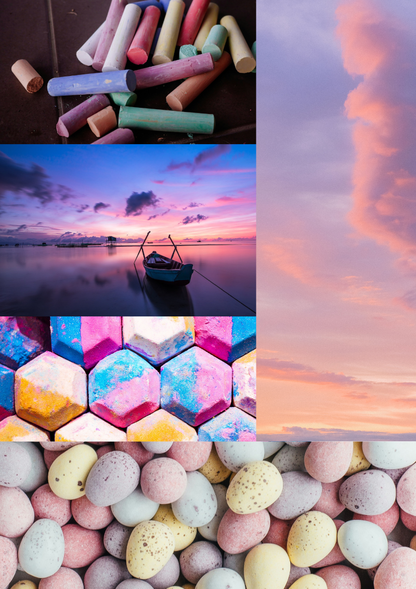
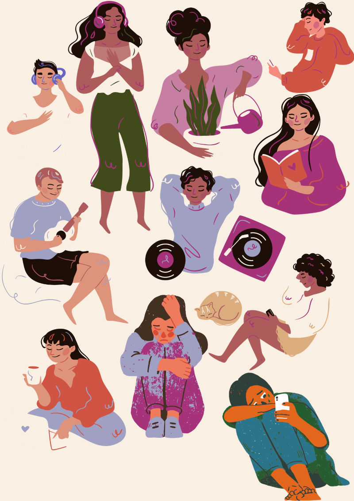

Use of Images in the Web
Youngminds
Images on the Youngminds website are mainly raster images. They are mainly used in reference to other pages, such as blogs or differentating who are the users—sections for parents have older people, and mental health resources for young people have pictures of adolscents. This has been helpful in terms of navigational aid and allowing users to identify the content or context associated with a particular link or section. Another feature with images to note is the consistency in style and quality of images which made the website appear to be cohesive.NHSInform
The NHSInform does not make extensive use of images. In some cases, they are at the top of the page or serve as a link to blog-style articles. The images used are raster images with diverse representation. In comparison to other websites, it relies heavily on text. This might have been because it is an official website primarily for textual information. However, in some cases, such as skin condition pages, the text lacks any accompanying images. If included, this can elevate the content and assist the website in attaining its goal of informing people about their health. Because raster images can be large, it is worth noting that they appear to have been optimised in this website, enabling reasonable page loading times.HH Manifesto
One of my primary design influences is the HH Manifesto. The images flow very smoothly and complement the website, and they are all vectors. Images are used with purpose; for example, when statistics about mental health are presented, they are accompanied by small vectors that aid in retention (especially when large typography and short sentences are used.) The images flow smoothly, implying a well-thought-out design strategy. Notable is the careful consideration given to image placement, sizing, and alignment in order to create a unified visual narrative as users navigate through the content.Image Samples

The above scenes are from real life, including the sunset, chalk, bath bombs, rocks, and the sky—all in calming pastel colours. It captures different settings where the colours seamlessly align into my chosen colour palette shown previously on moodboard. The soft pastel hues not only create a tranquil and harmonious vibe but also complement the overall visual theme. These visuals are mainly used for their appeal in relation to their colour palette.

Illustrations can help captivate my users’ attention and evoke emotions. Visuals make information more digestible and engaging, providing visual cues that can aid in comprehension, retention, and appeal. In the context of a wellness website, where the aim is to educate and engage the audience, illustrations serve as compelling tools to achieve these objectives. Especially when it comes to information retention. This collage is a collection of relevant illustrated images that I could use for my website which includes diverse activities, hobbies and emotions. This paints a holistic picture of wellness.
Reflecting on the quality, I tried to balance quality and size whereby I balance size without comprising as much on quality. The quality of visuals is critical in interface design—people are drawn to a crisp, high-resolution photograph and good pictures are "game-changers" . This is the reasoning behind the vivid colours I have chosen and the textures to reflect the pastels and my colour palette. An issue with compromising file size is how it affects loading time and user experience. In this case, these collages are png files which is a lossless compression file type; this means it can compress into smaller sizes without sacrificing image quality. After optimization, the file sizes were reduced from 834 KB to 379 KB for the illustrations and 4.44 MB to 1.48 MB for the photorealistic images. While in hindsight the photorealistic images are large, it is important to keep in mind that this a collage. I have consulted with my peers to load my website and give me feedback on its loading time. Fortunately, feedback is positive, and the images loaded within a reasonable time.